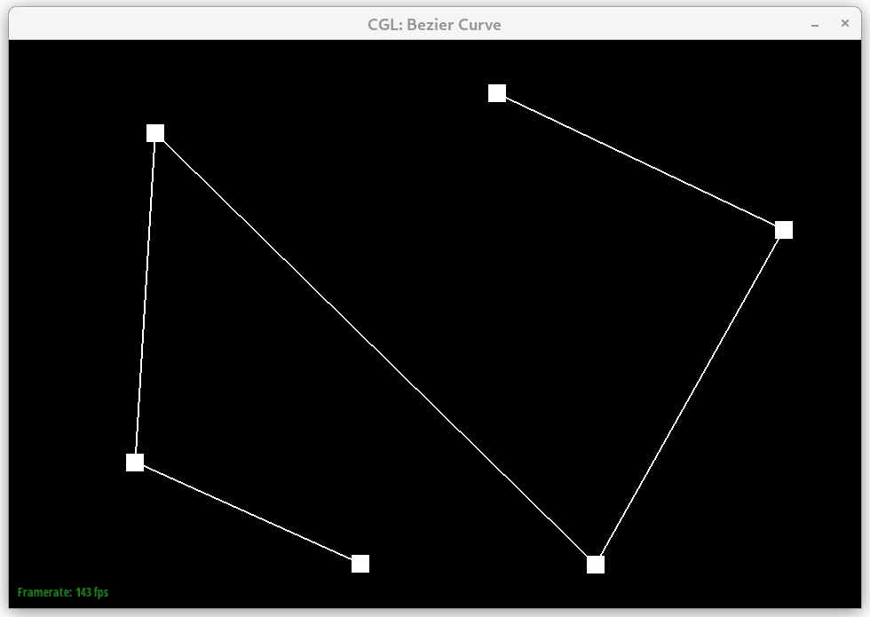
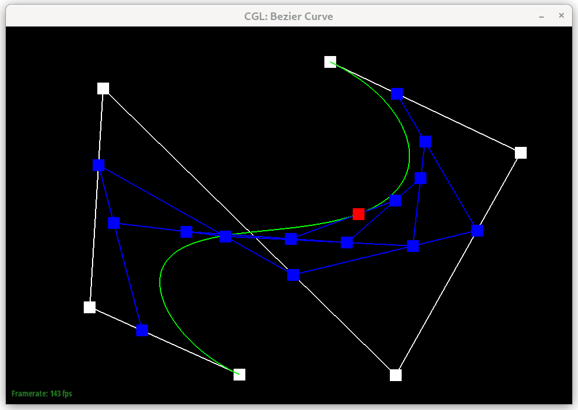

Overview
In this project I implemented two things:
- Casteljau's algorithm for evaluating Bezier curves and Bezier surfaces
- The flip-edge, split edge, and upscale operations of a HalfEdgeMesh datastructure, which can be used to programmatically modify some arbitrary mesh and perform what in the video game industry is refered to as "tesselation", which is really cool because I have always wondered how DX11 and OpenGL do that.
Section I: Bezier Curves and Surfaces
Part 1: Bezier Curves with 1D de Casteljau Subdivision
Briefly explain de Casteljau's algorithm and how you implemented it in order to evaluate Bezier curves.Castelau's algorithm allows us to evaluate Bezier curves by performing a recursive computation, where at each step we take in N control points and output N-1 points, which we compute by lerping between sucessive points in the input list at some value "t" that ranges from 0 to 1. We perform this recursive computation until we have one final point. That point is the point which lies on the Bezier curve at location "t".
Take a look at the provided .bzc files and create your own Bezier curve with 6 control points of your choosing. Use this Bezier curve for your screenshots below.

Show screenshots of each step / level of the evaluation from the original control points down to the final evaluated point. Press E to step through. Toggle C to show the completed Bezier curve as well.
|

|

|

|

|

|

|
|

|
Show a screenshot of a slightly different Bezier curve by moving the original control points around and modifying the parameter \(t\) via mouse scrolling.

Part 2: Bezier Surfaces with Separable 1D de Casteljau
Briefly explain how de Casteljau algorithm extends to Bezier surfaces and how you implemented it in order to evaluate Bezier surfaces.We can compute Bezier surfaces by essentially performing the bezier curve evaluation in two dimentions. First, we evaluate along one dimention at some value "u" and get back a list of points (one for each bezier curve we evaluated). Then, we simply treat that list of points as a new list of control points and evaluate that bezier curve at some other value "v". The final point we get back is the point at coordinate (u, v) on the bezier surface.
Show a screenshot of bez/teapot.bez (not .dae) evaluated by your implementation.

Section II: Triangle Meshes and Half-Edge Data Structure
Part 3: Area-Weighted Vertex Normals
Briefly explain how you implemented the area-weighted vertex normals.To caluclate the normals I first had to iterate over all of the faces connected to a vertex. To do that I looked at the implementation of the "degree" function for the Vertex class and used the same logic to iterate over the faces. Then, I simply got the position of the two other vertices that make up the triangle in question and then computed the cross product of the two vectors pointing to those vertices from our root vertex. This cross product be definition is the normal of the face multiplied by twice the area of the face. Therefore, I simply added all the cross products from all the faces then simply normalized the final vector to have length 1.
Show screenshots of dae/teapot.dae (not .bez) comparing teapot shading with and without vertex normals. Use Q to toggle default flat shading and Phong shading.

|

|
Part 4: Edge Flip
Briefly explain how you implemented the edge flip operation and describe any interesting implementation / debugging tricks you have used.I decided to implement the operation in place, so that I don't have to deal with creating or deleting any mesh elements. I first iterated over all the half edge elements that would need to be changed (all 6 half edge elemens, 3 from each face). Then, I got the two faces that would need to be altered, and finally I set all the parameters in the mesh elements to point to the new correct values (i.e. I reset the "halfedge" element of the 4 vertices and 2 faces, then called "setNeighbors" on all 6 halfedges).
Show screenshots of the teapot before and after some edge flips.

|

|
Write about your eventful debugging journey, if you have experienced one.
Thankfully, implementing this function wasn't too difficult. No noteworthy stuff to say here. The same cannot be said for the next part of this project...
Part 5: Edge Split
Briefly explain how you implemented the edge split operation and describe any interesting implementation / debugging tricks you have used.I implemented the edge split operation in the same style as the flig edge opertaion: make sure to get references to all the mesh elements I need to modify before preforming any modifications. Then performing all the modifications in one go. I made sure to only allocate new mesh elements and to never delete them, to make iterating over the list of edges and performing split operations in the next part easier.
I then decided to try and implement edge splitting on boundaries for extra credit, and this is where I faced some challenegs. I kept getting segmentation faults and debugging took a long time. I was able to find the bug in the end by using the editors built in mesh element inspector that listed memory addresses. Using this tool I was able to figure out that I forgot to save a reference to a face before overriding it later, so then when I referenced it I was actually referencing a new and different face. This led to some nasty recursive behavoir that made the program crash somehow (not entirely sure how). Anyways, I got it working in the end, which you can see from the pictures below.
Show screenshots of a mesh before and after some edge splits.

|

|
Show screenshots of a mesh before and after a combination of both edge splits and edge flips.

|

|
Write about your eventful debugging journey, if you have experienced one.
As mentioned above, I ran into some trouble implementing the edge splitting on boundary edges. The bug happened because I was trying to be clever and reuse code between the non-boundary and boundary code. I did this by grouping as much code as I could that would be identical for both cases and moved it to the top of the function, then I added a simple if statement in the bottom. The problem was that the way I had designed the code I forgot to take into account that I was resuing the halfedge elements to prevent deletion. And in doing so I had overriden the face element of the halfedge that served as a boundary in that condition. This meant that later in the function when I called "setNeighbors" on the two halfedge elements that were supposed to be the new boundary, the face I gave them (by calling the "face" function of my original halfedge element) didn't work.
To find this bug I honestly just tried a BUNCH of things and kept performing splits on edges and inspecting the memory addresses of the elements. Since the segfaults didn't happen all the time I could sometimes read the properties of the new mesh elements and based off of that I figured out that the face pointer wasn't correct.
If you have implemented support for boundary edges, show screenshots of your implementation properly handling split operations on boundary edges.
I implemented boundary edge splitting and included pictures in the above sections.
Part 6: Loop Subdivision for Mesh Upsampling
Briefly explain how you implemented the loop subdivision and describe any interesting implementation / debugging tricks you have used.I implemented loop subdivision in the way suggested to us in the project description, and the comments in the project:
- Iterate over all the existing vertices and calculate their new positions based on the given formulas, then store this value in the vertex's "newPosition" variable.
- Loop over all the edges in the mesh and compute the postion of the vertex that is to be created in the middle of them later, then store this value in their "newPosition" variable.
- Loop over all the edges and perform the split operation, then set the position of the new vertex to the one stored in the edge.
- Flip all edges in the mesh that connect an old vertex to a new one
- Set the position of all the old vertices to the value stored in their "newPosition" variable.
Take some notes, as well as some screenshots, of your observations on how meshes behave after loop subdivision. What happens to sharp corners and edges? Can you reduce this effect by pre-splitting some edges?
Sharp corners get smoothed out considerably. As we can see from this example of the algorithm being applied to the cube model over and over again:

|

|

|

|

|

|

|

|
Load dae/cube.dae. Perform several iterations of loop subdivision on the cube. Notice that the cube becomes slightly asymmetric after repeated subdivisions. Can you pre-process the cube with edge flips and splits so that the cube subdivides symmetrically? Document these effects and explain why they occur. Also explain how your pre-processing helps alleviate the effects.
This assymetry happens because the original model is assymetric (due to each face being made up of only 2 triangles instead of a more symmetric but less efficvient 4). Here is loop subdivision after performing this simple preprocessing:

|

|

|

|
If you have implemented any extra credit extensions, explain what you did and document how they work with screenshots.
I tried implementing loop subdivision on meshes with boundaries for extra credit. Since I got it working for the split edges algorithm I was already halfway there, so I fugred I would try. I made some minor modifications to my initial loop subdivision algorithm to work with boundaries, and then I got to the final step: modifiying my vertex update position code to properly calculate the new position of vertices on a boundary.
I tried reading the linked paper but after much time and lots of confusion I gave up trying to get the formula from there. However, I didn't give up and decided to try and implement my own version of it, even if it isn't 100% correct.
When runnning the algorithm with my code at its current state, I was getting an issue where the edge along a boundary of a model would get "pulled" towards the model when performing loop subdivision. Here is a before and after image of performing loop subdivision on the "beetle.dae" model.

|

|
To fix this, I decided to try a bit of a workaround: When calculating the new position of vertices on the boundary, I would calculate the normal of that vertex, then project the "movement" of the vertex onto the normal, before applying it to the vertex. This essentially "pins" the vertex to the edge and prevents it from getting "pulled" inwards. This method is almost certainly wrong, but when running it on the beetle model it seems to work alright, so I figured it might be worth some partial credit.

|

|